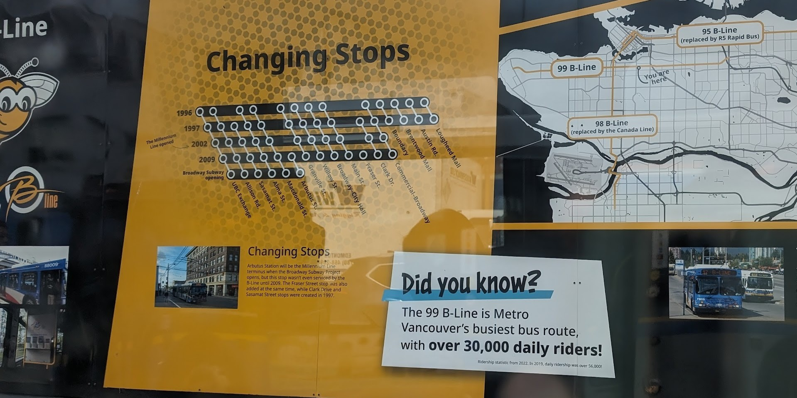

January 7, 2025
Mara Solen
The 99 B-Line is an express bus route in Vancouver, BC that originally covered both the Broadway Corridor and a portion of Lougheed Highway. Today, it covers only the Broadway Corridor, and soon, in 2026, it will be further reduced to only cover the Broadway Corridor between UBC and Arbutus street. Both of these reductions in coverage occured because of the Millenium Line, a Skytrain route that was first built in 2002 and is now being extended. The visualization below shows how the route and its stop placements have changed since it first opened in 1996.
The 99 B-Line is not only the busiest bus route in the city, but in all of North America. Due to this popularity, the 99 B-Line was the first bus with all-door boarding, beginning in 2007. Given the route's near-future reduction, it will likely lose its status as busiest route in the city. It may even be renamed, which would mark the end of the B-Line routes as the 99 is the last remaining one. An installation outside the Broadyway - City Hall stop, attached to fences blocking off Skytrain construction, shows information on the 99 B-Line and the other B-Line buses. The visualization of stop changes included inspired me to make my own.
